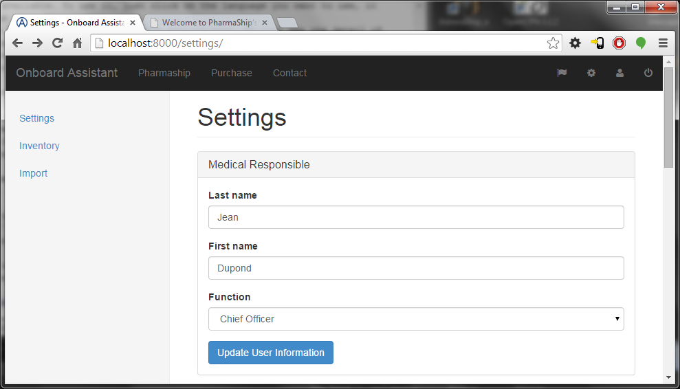
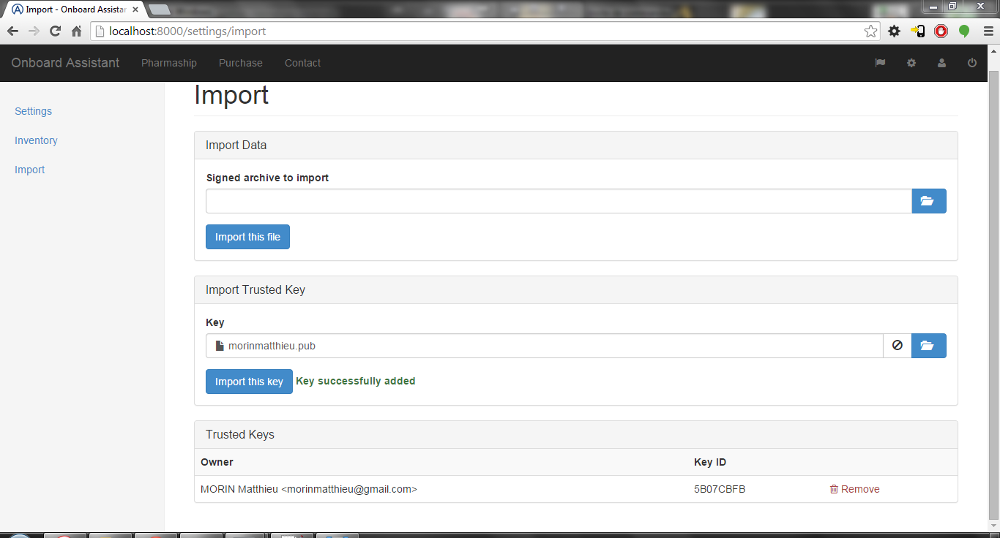
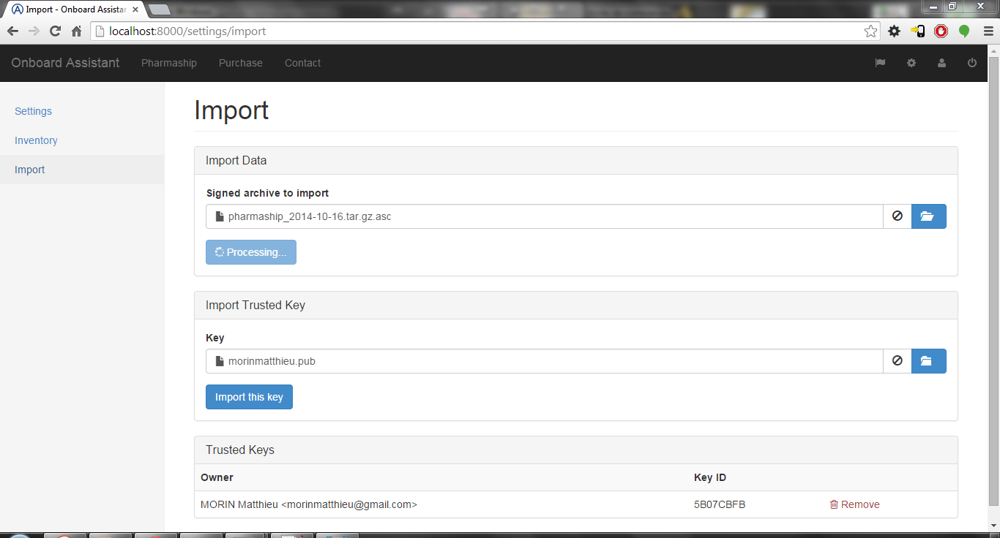
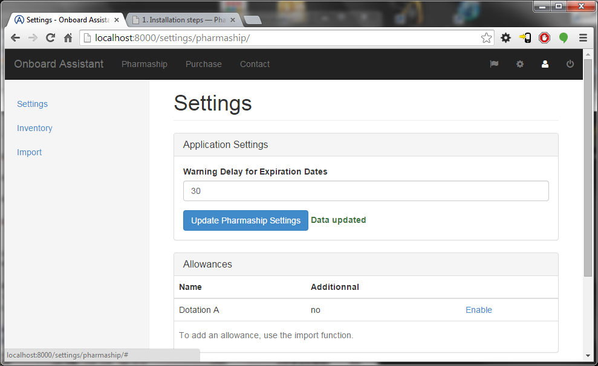

1. Installation steps¶
1.1. Software Requirement¶
To install Pharmaship on your server you need :
For Windows users, you should install also:
Regarding the last link, for a valid Weasyprint installation, make sure that Set up PATH environment variable is checked.
That’s the only external application needed, the other one are dependencies and there installation will be described on the installation process.
1.2. Installation process¶
Once the requirements are satisfied, you have to download the extract the git from the repository to the folder of your choice. Please, be advised that it is the folder where you will store your application definitely.
Once done, with administrator/superuser privileges, run python setup.py develop. This will install all required dependencies.
1.3. Just before starting¶
In MySQL, you have to create a dedicated DataBase. To do so, follow the next steps in MySQL console:
> CREATE DATABASE pharmaship;
> GRANT ALL PRIVILEGES ON pharmaship.* TO 'pharmaship'@'%' IDENTIFIED BY 'pharmaship';
That makes a DataBase called pharmaship and then a user with full access on it (password is also pharmaship, so you won’t have to modify ~/conf/mysql.conf, but you should personalised it for security reasons.
Now, you might go through a terminal to the location of your newly uncompressed PharmaShip application, and then launch:
> python manage.py migrate
> python manage.py createsuperuser
My advice is to give there a login as root, then a strong password (multiple characters, numbers, and special chars) in order to preserve your application in the future.
Then, in order to be allowed to change the language of the application, run:
> python manage.py collectstatic
> python manage.py compilemessages
And finally, to run PharmaShip, you have to launch (and make [CTRL]+c to stop it):
> python manage.py runserver
1.4. First launch¶
At that step, by entering http://localhost:8000, you should see the following window:

Where you have to enter your login created above and the password you choose. You should arrive on the first page, like that one:

On that page, you will find a lot of information. Let’s make a round over there...
On top, you have a dark menu bar with from the left to the right the following items:
- The application logo, which bring you back to the home page.
- The main branches of the application:
- Pharmaship,
- Purchase,
- Contact.
- Then, on the right side of that menu bar, you will find some icons:
- A flag icon, to change the language interface. On that version, only French or English are available. To use it, just click on the language you want to use, it should change straight.
- A settings icon, which is a link to the setting page. We will see the detail of all those pages later on, that one will be the first.
- A user icon, with two fields : my account and administration.
- A logout button, to disconnect from your session.
On the right menu bar, you will find:
- Medicine Inventory,
- Material Inventory,
- Requisition Overview,
- Emergency Contact button.
Main page is empty, but you might explore a little, we will continue with the initial configuration. So far, the application is also empty...
Let’s go back to the top menu bar, on the right, you have the settings button. firstly note that on user > administration you might damage seriously the database, so please avoid to go there, or do it with an extreme caution.
1.5. User Configuration¶
By going to user > my account, you will open the settings view. You might also click on the configuration button to go there.
Fill the fields of medical responsible and click on `` Update User Information``.
1.6. Ship configuration¶
Once data are updated, you will find Data updated close to the button, in green. Taking the chance to be there, go down and fill the vessel particular fields.
1.7. Company logo¶
To display your company logo, change the image located in common/compagnie.png by your own company logo! But don’t rename it. That’s easy, isn’t it ?
1.8. Trusted key & inventory¶
Then, you have to go to import page - on the left menu bar - in order to update the inventory you will need. In order to do so, first add the public key in order to allow the readings of the inventory file.
Once imported, you will find the following view:
Now you can add the first set of data you need to PharmaShip in the import data fieldset. You will have to wait a little:
And finally:

Please note that when you receive a new allowance file, it has to be loaded in order to keep your stock in accordance with regulation/company.
1.9. Dotation in force¶
Once this is done, you have to activate the imported allowance. To do so, using the left menu, go to inventory page. Once there, adapt the value of Warning Delay for Expiration Dates in number of days and click to Update Pharmaship Settings.
Then, on Allowances fieldset, you might see the dotation you import on the previous paragraph. Click on enable in order to enable it. This toogles the link to disable value, meaning you might disable it, if you click on it.
On the top bottom of that page, you have also to set the location where you can store medicines or medical material. Please, note in further developpement that if some articles in stock are stored on those location, they will be assign to Pharmaship, straight.